Our AI-powered skin analysis system precisely assesses your skin type and condition,
then recommends a personalised care and treatment plan optimised exclusively for you.
Skin Condition Analysis
A systematic analysis of skin ageing indicators and concerns to assess your current skin condition with precision.
A multi-dimensional assessment of wrinkles, firmness, and pigmentation to evaluate your skin's current ageing condition.
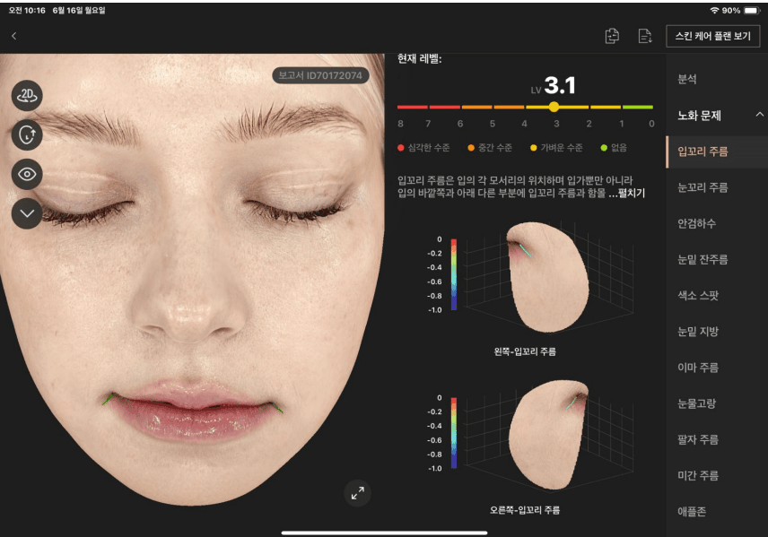
Marionette Line Analysis
Also known as marionette lines, these are characteristic ageing wrinkles that form at the corners of the mouth and along the outer lip area.
We analyse the underlying causes and current condition of these lines to provide tailored improvement guidance.
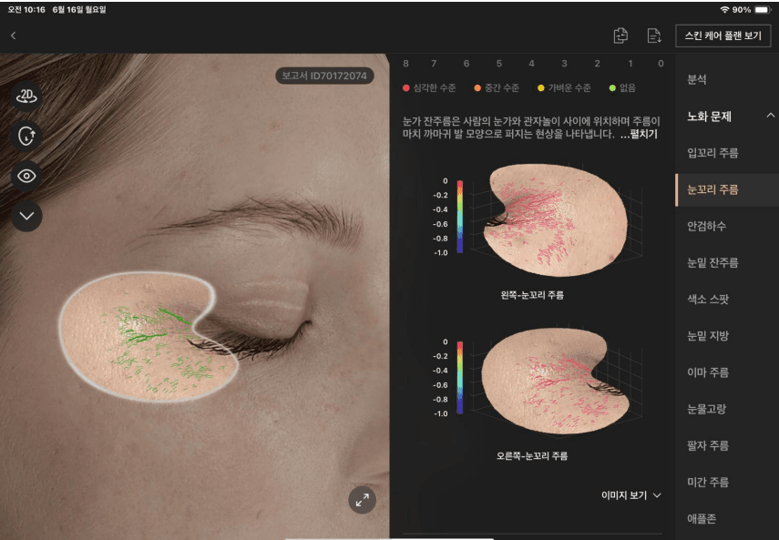
Crow's Feet Analysis
Characteristic expression lines that form between the outer corner of the eye and the temple.
We analyse the causes and current condition of crow's feet to provide personalised improvement guidance.
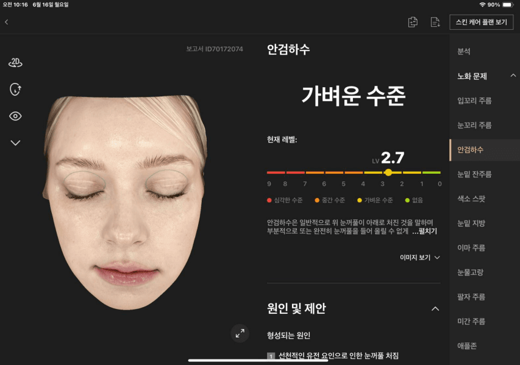
Ptosis (Eyelid Drooping) Analysis
An assessment of the degree of eyelid drooping to evaluate your current eye contour, with a predictive simulation feature to preview potential improvements.
Based on the analysis, personalised improvement guidance is provided.
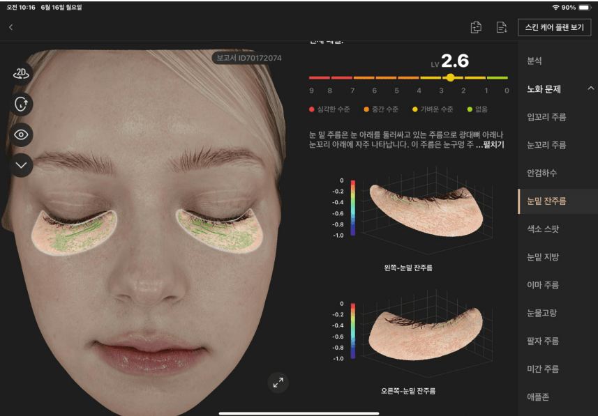
Under-Eye Fine Lines Analysis
Fine lines that appear beneath the cheekbones and around the eye area, closely associated with reduced skin elasticity and dehydration.
We analyse the causes and current state of under-eye fine lines to recommend personalised improvement strategies.
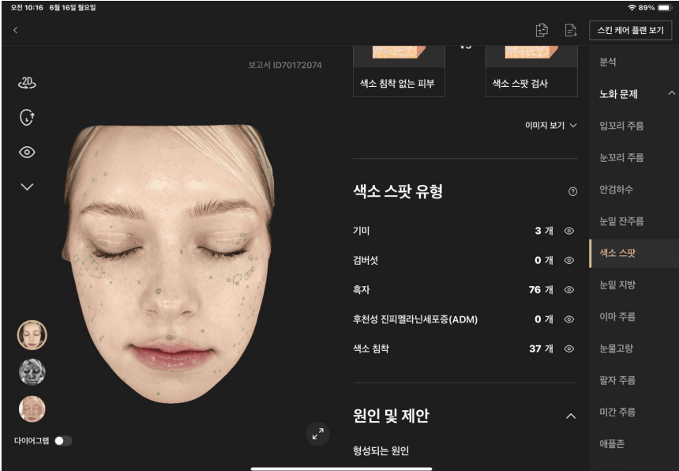
Pigmentation Analysis
An assessment of various types of pigmentation including melasma, seborrhoeic keratosis, freckles (lentigo), and acquired dermal melanocytosis (ADM).
Based on the analysis of pigmentation causes and results, tailored improvement guidance is provided.
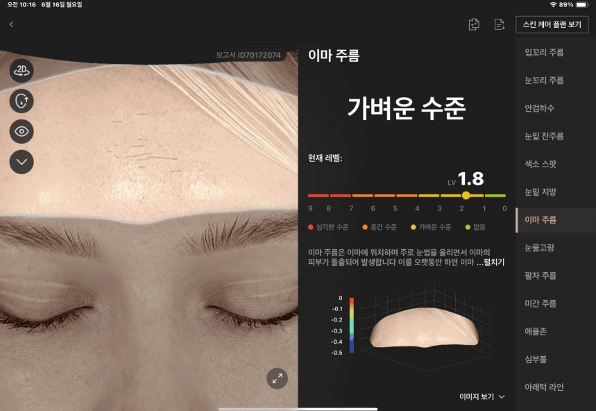
Forehead Wrinkle Analysis
Characteristic expression lines across the forehead, which may develop through repeated muscle movement and reduced skin elasticity over time.
We analyse the causes and current condition of forehead wrinkles to provide personalised improvement guidance.
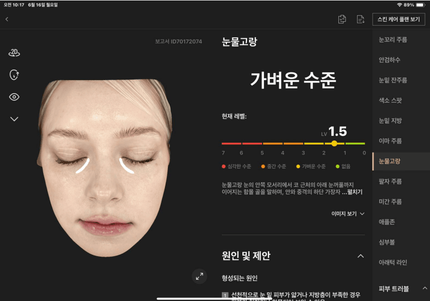
Tear Trough Analysis
An analysis of the degree of under-eye hollowing and volume change to evaluate the current eye contour, including a predictive simulation for improvement planning.
Based on the analysis, tailored improvement guidance is provided.
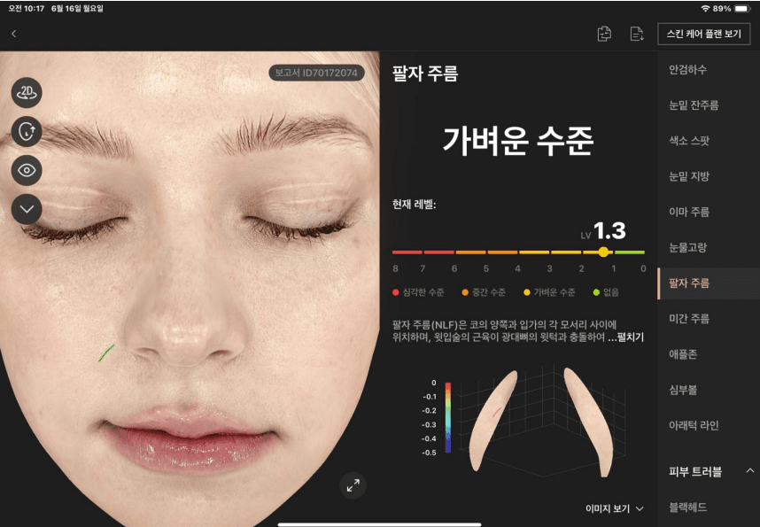
Nasolabial Fold Analysis
Prominent facial lines extending from the sides of the nose to the corners of the mouth, which may become more pronounced with reduced skin elasticity and volume loss.
We analyse the causes and current condition of nasolabial folds to provide personalised improvement guidance.
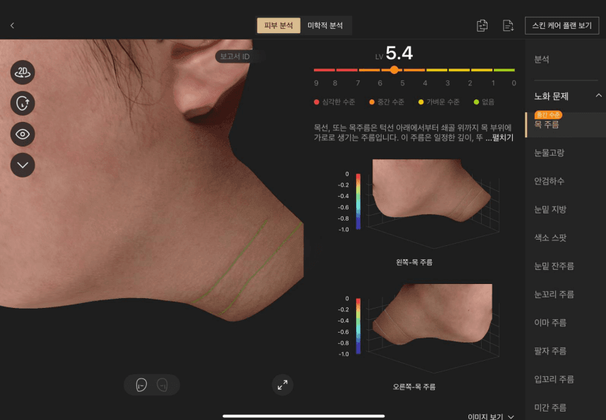
Neck Wrinkle Analysis
Horizontal wrinkles that form across the neck from the jawline to the collarbone, arising from reduced skin elasticity and lifestyle factors.
We analyse the causes and current state of neck wrinkles to provide personalised improvement guidance.
1 / 9
A precise assessment of key skin concerns including acne, pores, and skin tone to diagnose your current skin condition in detail.
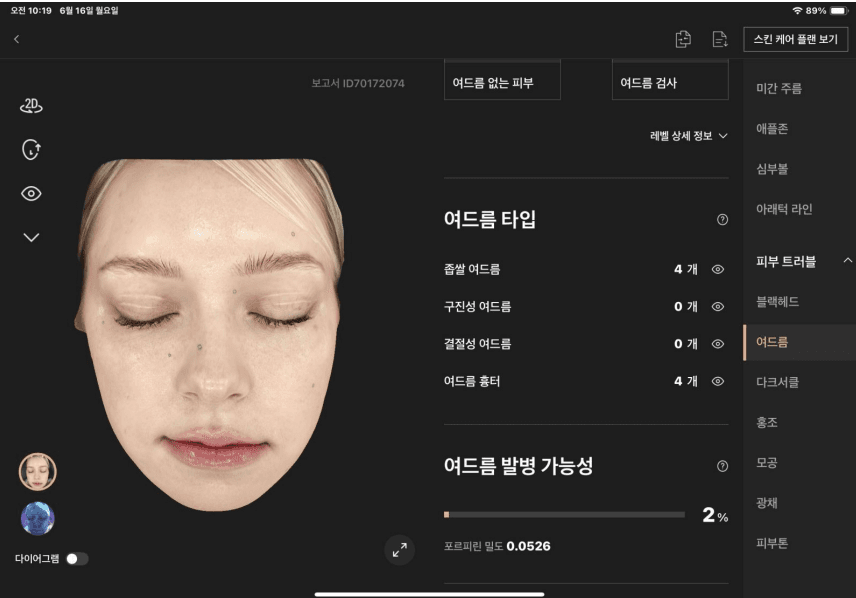
Acne Analysis
An analysis of various acne presentations in the epidermal layer, including comedones, papular acne, nodular acne, and acne scarring.
We analyse the causes and current skin condition to provide personalised improvement guidance.
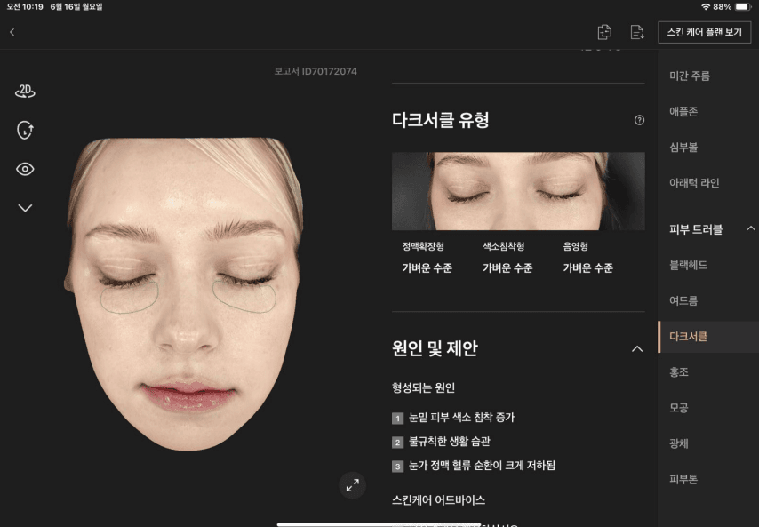
Dark Circle Analysis
An assessment of dark circles around the eye area, identifying various types including vascular, pigmentation, and shadow-related presentations.
We analyse the underlying causes and current condition to provide personalised improvement guidance.
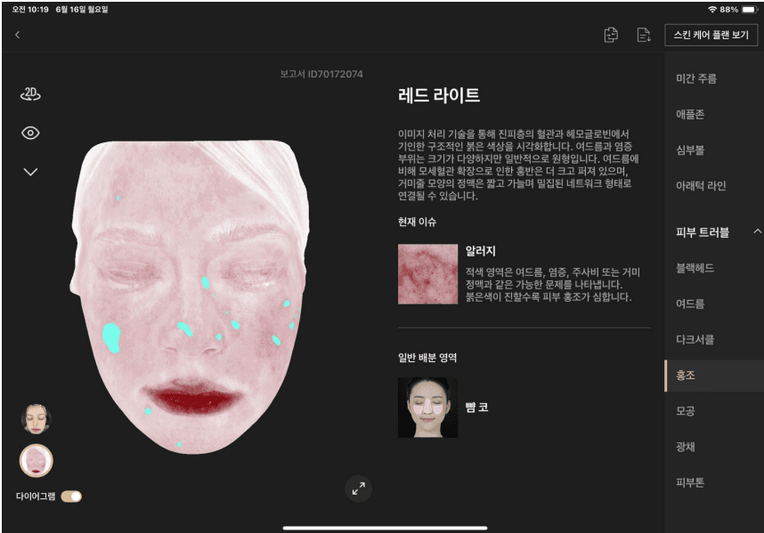
Redness Analysis
An assessment of skin redness, identifying various related concerns including acne, inflammation, and telangiectasia (spider veins).
We analyse the causes and current condition of redness to provide personalised improvement guidance.
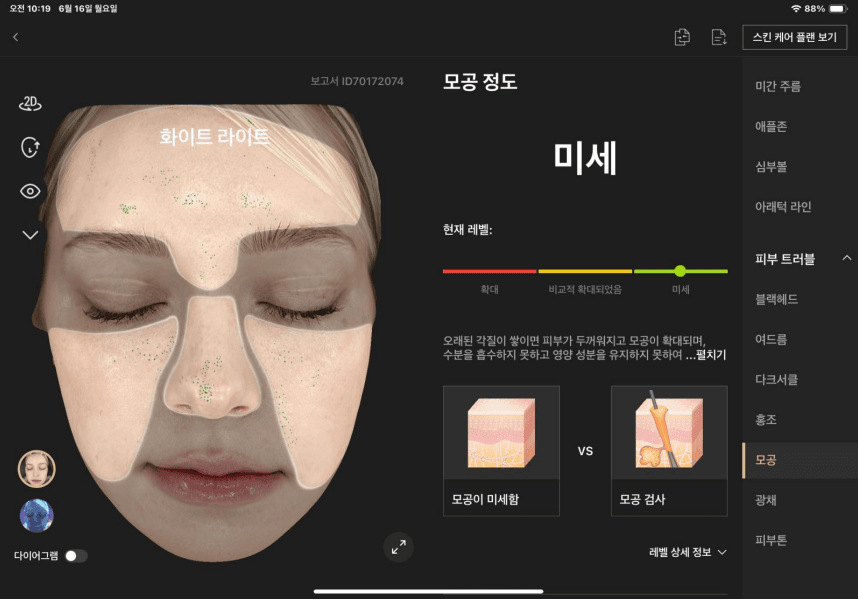
Pore Analysis
A precise assessment of pore condition and skin texture to evaluate your current skin state.
Based on the analysis of pore causes and results, personalised improvement guidance is provided.
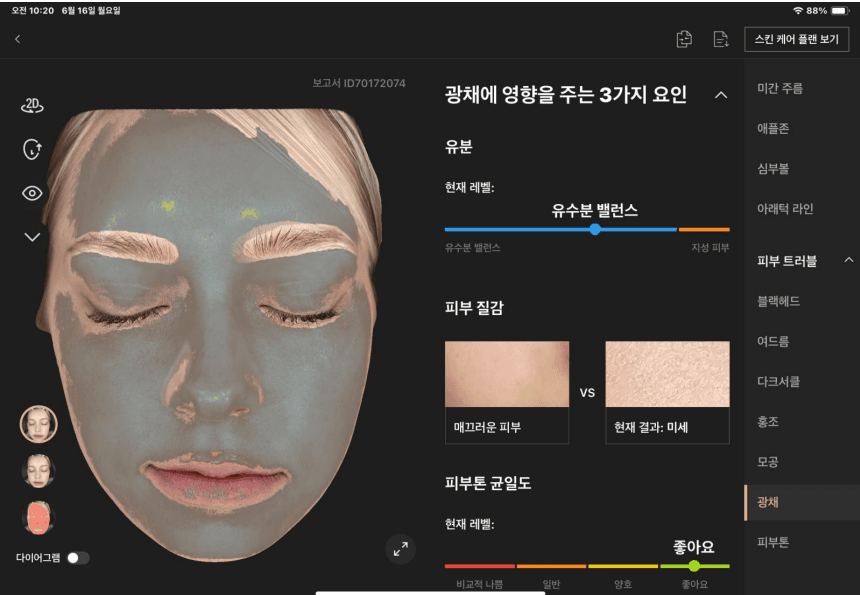
Radiance Analysis
A comprehensive evaluation of sebum levels, skin texture, and uniformity to assess your skin's overall luminosity.
Based on the radiance analysis, personalised skincare guidance is provided.
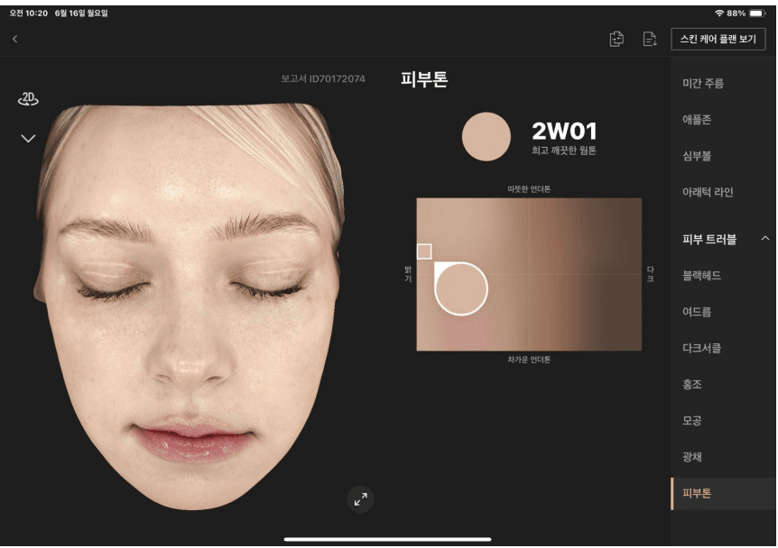
Skin Tone Analysis
An assessment of skin luminosity and warm/cool tone balance to evaluate your current complexion.
Based on the skin tone analysis, personalised skincare and improvement guidance is provided.
1 / 6
Facial Design Analysis
A precise measurement of facial proportions and angles to provide comprehensive facial balance information — a valuable reference for treatment planning and personalised design review.
Vertical and horizontal facial proportions are measured and compared against ideal golden ratios to assess overall facial structural balance.
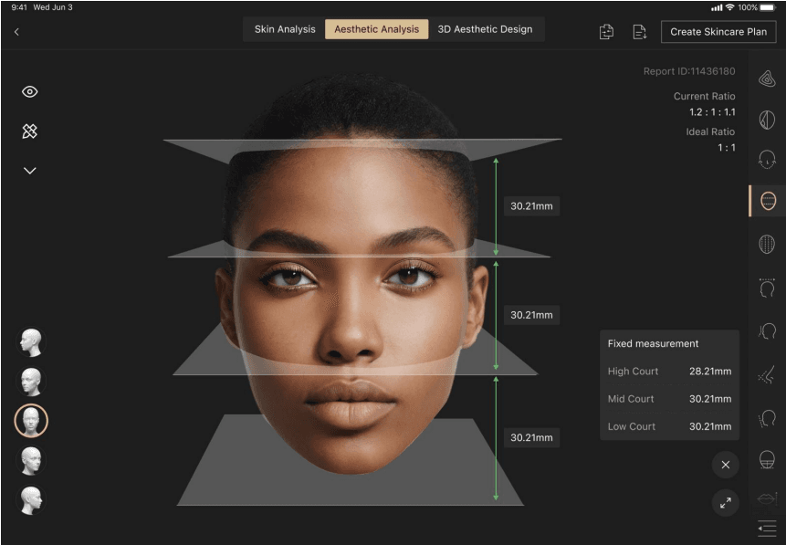
Facial Thirds Analysis
An analysis of the vertical proportions across three zones — the upper third (hairline to brow), the middle third (brow to nasal tip), and the lower third (nasal tip to chin).
The length ratios of each zone are quantified to identify facial balance and areas for improvement.
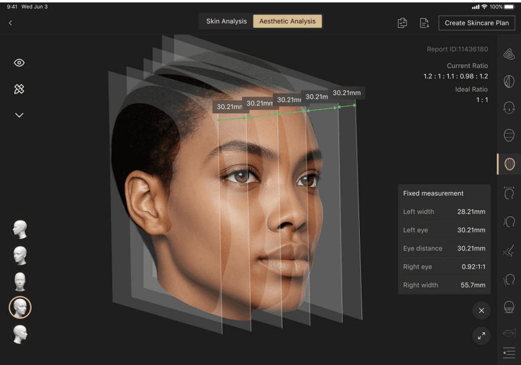
Facial Fifths Analysis
The facial width is divided into five equal segments using one eye-width as the unit, analysing left-right symmetry and the horizontal placement of the eyes, nose, and mouth.
This assessment reveals the central axis symmetry and structural balance of the face.
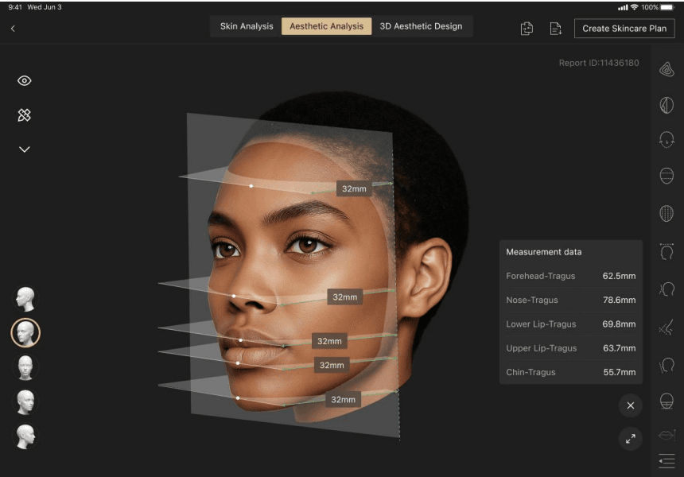
Depth Measurement
The three-dimensional depth (projection and depression) of key facial zones including the nose, eyes, and cheeks is measured to analyse facial volume distribution.
Depth data informs optimal improvement direction and volume recommendations for filler and volumising treatments.
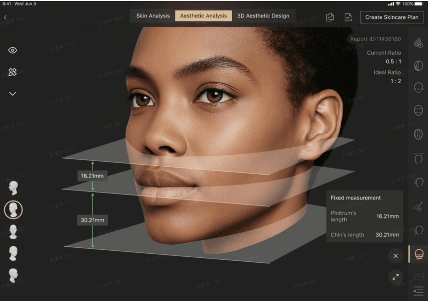
Lip–Chin Proportion Analysis
The proportions and positional relationships between the upper lip, lower lip, and chin tip are analysed to assess lower facial balance.
The deviation from ideal lip–chin proportions is quantified to provide personalised improvement simulation.
1 / 4
Facial angles measured from lateral and frontal views provide a comprehensive analysis of skeletal structure and skin laxity.
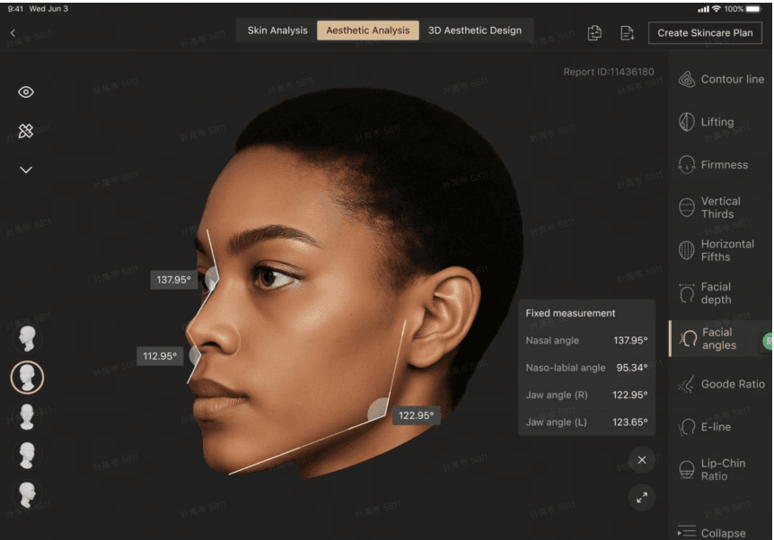
Lateral Facial Angle Analysis
The lateral profile angle connecting the forehead, nose, lips, and chin is analysed to determine facial projection patterns and skeletal characteristics.
Lateral angle data informs the optimal approach for contouring treatments and implant placement.
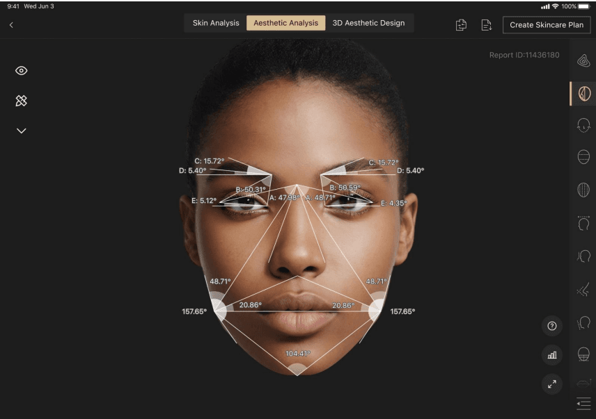
Lifting Angle Analysis
Changes in the angles of the outer eye corners, cheeks, and jawline caused by skin laxity are measured to visualise the degree of ageing progression.
Pre- and post-lifting angle change simulations allow patients to review expected improvement direction and outcomes in advance.